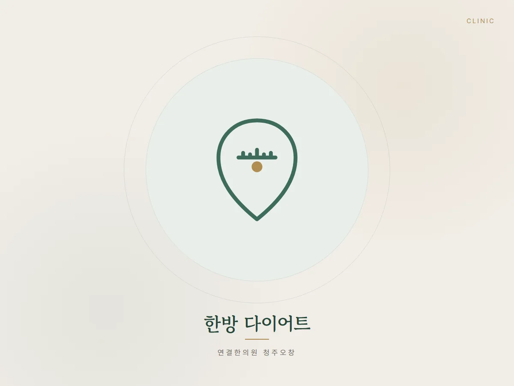
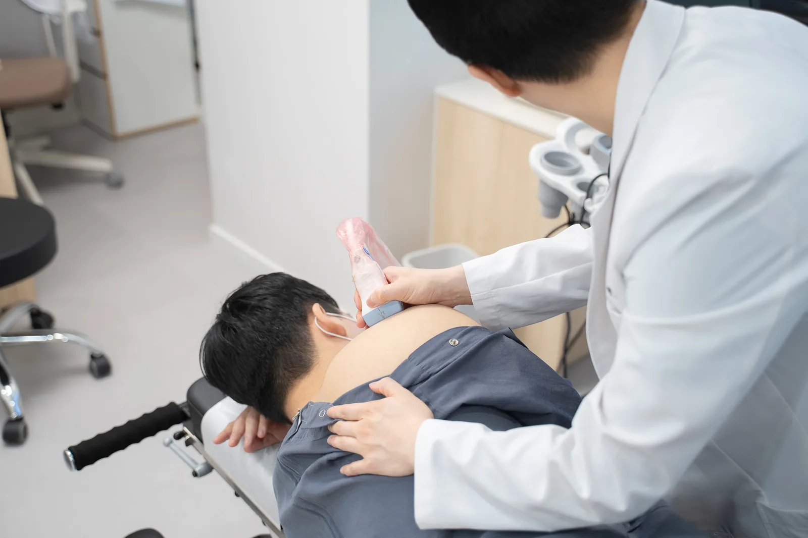
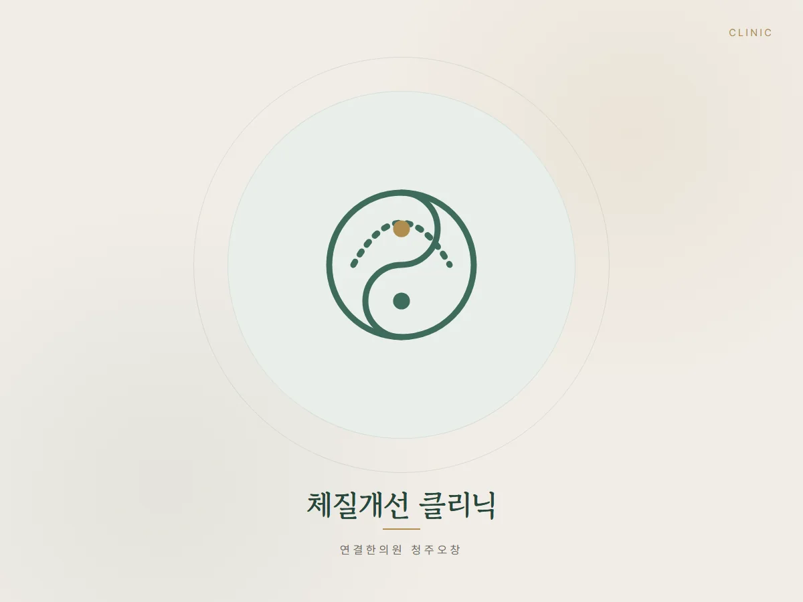
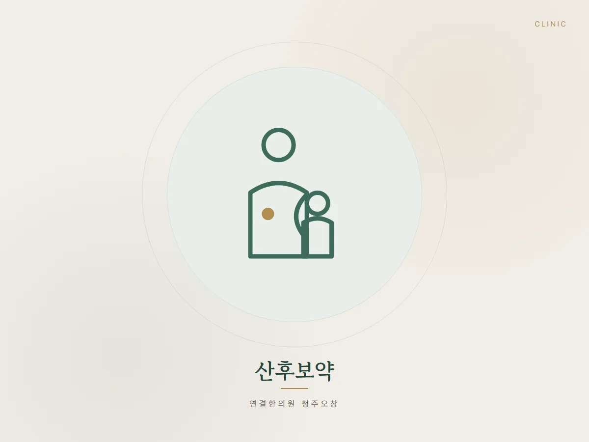

진료 안내
진료과목
증상 단계와 체질에 맞춰 다르게 처방하는 연결한의원 청주오창의 주요 진료 분야입니다. 각 진료의 대상과 진행 과정, 개인차와 한계를 확인해 보세요.
녹용 2배 공진단
체질과 상태에 맞춘 녹용 분골 2배 공진단 상담 및 처방
자세히 보기 →
한방 다이어트
한의사 원장님들이 식사·수면·복용약과 체중 변화를 직접 확인하는 한방 다이어트
자세히 보기 →
추나·통증치료
일자목·거북목·만성두통·골반 틀어짐·허리디스크·척추관협착증 등 통증의 구조적 원인을 추나와 침·약침으로 다루는 진료
자세히 보기 →
교통사고 · 자동차보험 한방진료
자동차보험 적용, 본인부담금 없이 진료하는 교통사고 후유증 치료
자세히 보기 →성장보약 · 소아 한방치료
성장·면역·소화를 함께 살피는 아이 맞춤 한방 진료, 녹용 분골 성장보약
자세히 보기 →
체질개선 클리닉
비염·두통·어지럼·소화장애·산후·갱년기 증후군을 체질 맞춤 한약으로 살피는 진료
자세히 보기 →
산후보약
산후풍·부종·관절통·수유 상태를 확인해 어혈 제거와 기혈 보강 단계로 나눠 관리하는 산후조리 한약
자세히 보기 →추나요법·침·약침·부항 등은 건강보험 및 자동차보험(교통사고) 적용 항목이 있으며, 개인의 상태에 따라 진료 내용은 달라질 수 있습니다. 정확한 내용은 내원 상담 시 안내해 드립니다.
Conditions